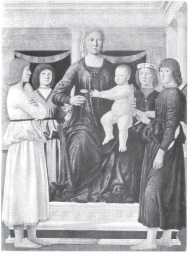
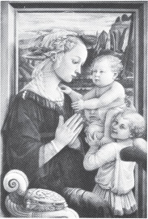
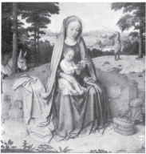
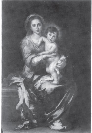
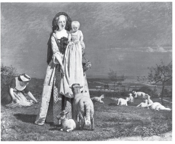
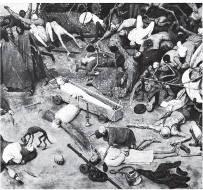
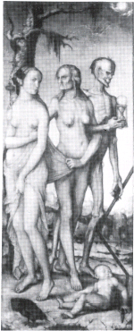
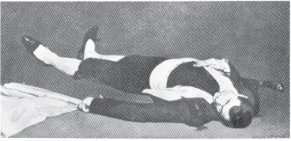
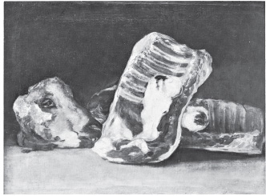
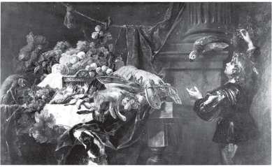

CIMABUE YAK. 1240–1302?

FRA FILIPPO LIFPI 1457/8–1504

PIEFO DELLA FRANCESCA 1410/20–1492

GRARD DAVID 1523
RAPHAEL 1483–1520

FORD MADOX BROWN 1821–1893

MURILLD 1617–1682
GOIOTTO 1266/7–1337

PIETER BREUGHEL 1525–1569
GERICAULT 1791–1824

ECOUARD MANET 1832–1883

HANS BALUNG GRIEN 1433–1545

